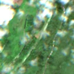
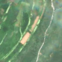

5,4 ha de pădure schimbată lângă Hinova
Între 12 mai 2026 și 20 mai 2026, pe aproximativ 5,4 ha de pădure din comuna Hinova, județul Mehedinți, imaginile Sentinel-2 arată că vegetația a dispărut sau s-a schimbat puternic. În registrul public există o autorizație de tăiere pentru acest loc.
Autorizația de tăiere
cu autorizație
Parcela autorizată acoperă zona, iar autorizația era valabilă când s-a tăiat.


Înainte și după: Copernicus Sentinel-2, 10 m pe pixel, conturul zonei cu portocaliu. Poza detaliată (Esri World Imagery) e de acum 1–4 ani: arată ce era acolo înainte, nu tăierea.
Pe scurt
- Identificator
- 20260520_44506_22773
- Locul
- comuna Hinova, județul Mehedinți (SIRUTA 112076)
- Coordonate (centru)
- 44.50569, 22.77314 · Google Maps · OpenStreetMap
- Suprafața
- 5,4 ha (din pixeli de 10 m; ± câțiva pixeli pe margine)
- Ultima imagine cu pădurea întreagă
- 12 mai 2026
- Prima imagine cu schimbarea
- 20 mai 2026
- Imagini în care se vede schimbarea
- 10
- Cât de sigur e semnalul din satelit
- ridicată
- Autorizația cea mai apropiată
- APV 2500188701540 · Ocolul Silvic Șimian, valabilă 1 aprilie 2026 – 29 iunie 2026, la 0 m de zonă
- Terenul
- pădure de stat, după amenajamentul silvic publicat
- Arie protejată
- Pădurea Stârmina, Blahnița
- Pădure pierdută în jur, alți ani
- 2001, 2023, 2024 (Hansen)
- Garda Forestieră
- Râmnicu Vâlcea
Dacă vrei să verifici sau să sesizezi
- Pădurile din județul Mehedinți sunt în grija Gărzii Forestiere Râmnicu Vâlcea, care controlează tăierile și dă amenzile.
- Autorizația găsită în zonă e emisă de Ocolul Silvic Șimian.
- Formularul Gărzii Forestiere Naționale primește sesizări și fără nume. Trimite linkul acestei pagini, coordonatele și pozele. Dacă tăierea e în desfășurare, sună la 112.
- Autorizațiile și transporturile de lemn se pot căuta în Inspectorul Pădurii.
Pagina arată ce se vede din satelit și ce scrie în registrul public; nu e o dovadă în sine.
Cum citezi zona
Linkul acestei pagini nu se schimbă. Dacă zona iese vreodată de pe hartă, pagina rămâne, cu data și cu ce știam despre ea.
Pădurea RO, zona 20260520_44506_22773: 5,4 ha, comuna Hinova, județul Mehedinți; schimbare văzută din satelit între 12 mai 2026 și 20 mai 2026. https://iliemihai.github.io/padurea-ro/zona/20260520_44506_22773/ (consultat la [data]). Date: CC BY 4.0.
Datele zonei: GeoJSON · toate zonele: date deschise · licența CC BY 4.0.
Istoricul zonei pe hartă
Starea se poate schimba când registrul publică o autorizație sau când analistul vede poze mai bune. O ținem aici, ca un link citat să arate și ce spuneam atunci.
Pe hartă cel târziu din 5 noiembrie 2026.
- 5 noiembrie 2026 – azi · cu autorizație
Detalii tehnice, pentru verificare
De ce acest nivel de încredere:
- văzută schimbată în 10 imagini diferite
- peste 3 ha
- pădurea din jur e neschimbată
- AI-ul vede pădure dispărută
- în poze, zona se schimbă vizibil față de pădurea din jur
- Placa Sentinel-2
- 34TFQ
- NDVI de referință
- 0.84
- NBR de referință
- 0.68
- Scăderea în pădurea din jur
- 0.0
- Persistență
- 0.93
- NDVI / NBR după
- 0.602 / 0.334
- Analistul de zi (model)
- taiere · 0.85 · claude-haiku-5-5
Cum se calculează fiecare: metodologia.
Pune harta zonei într-un articol
Copiază codul în articol (merge în majoritatea site-urilor de știri). Sau pune doar linkul: WhatsApp, Facebook și X arată singure poza zonei.